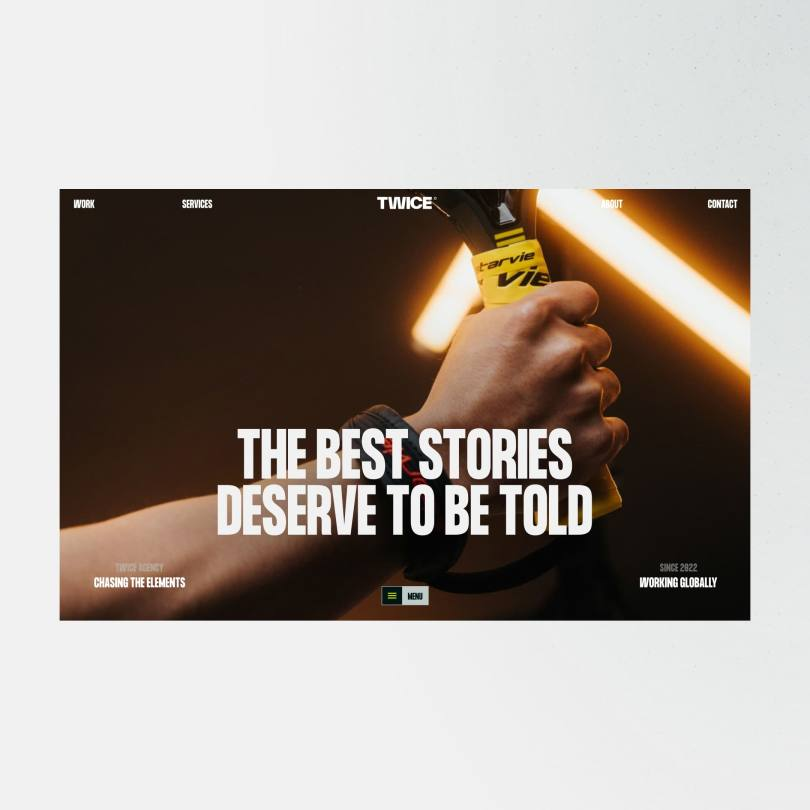
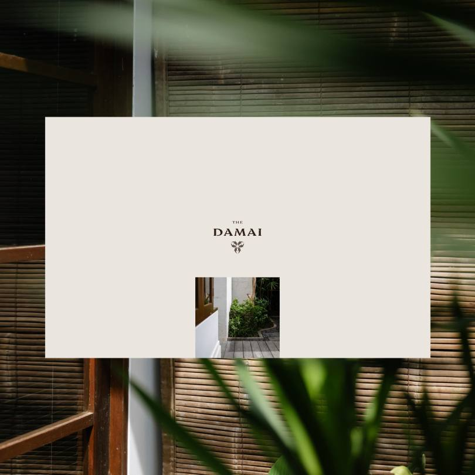

Личный
сайт
сайт
Резюме
& портфолио
Berzhanin Denis
Обо мне
Сайт в процессе созданияОпыт, идеи
и проекты.
В одном месте.
Я — Berzhanin Denis.
Собираю здесь всё важное обо мне: мой путь, навыки и работы.
Скоро на этой странице появится полное резюме.
К работамРаботы
Пока — примеры оформленияДемонстрационные проекты Dennis Snellenberg. Позже здесь будут мои работы.
TWICEВзаимодействие & разработка — проект Dennis Snellenberg, откроется в новой вкладке
The DamaiДизайн & разработка — проект Dennis Snellenberg, откроется в новой вкладке
FABRIC™Дизайн & разработка — проект Dennis Snellenberg, откроется в новой вкладке
AanstekelijkДизайн & разработка — проект Dennis Snellenberg, откроется в новой вкладке


Контакты
Berzhanin DenisДавайте
знакомиться.
Мои контакты скоро появятся здесь.